Aquí están todos los pedidos pagados, desde que se confirman hasta que el cliente se los lleva.
Desde aquí se cobran los pagos, se le avisa al cliente y se marca la entrega.
Cómo avanza un pedido
No se saltan pasos. Dos de ellos pasan solos.
1Confirmada: se registró con su pago. Espera que Ray confirme que el dinero llegó.
2En fabricación: pasa sola cuando Ray confirma el pago. El taller trabaja.
3Lista: pasa sola cuando el taller termina el último paso. Hay que avisarle al cliente.
4Entregada: la marcas tú cuando el cliente se la lleva.
Si todo es de entrega inmediata, no pasa por el taller: queda Lista al guardarla. Tú solo marcas Entregada.
La lista
Toca "Ventas" en Inicio. Arriba filtras.
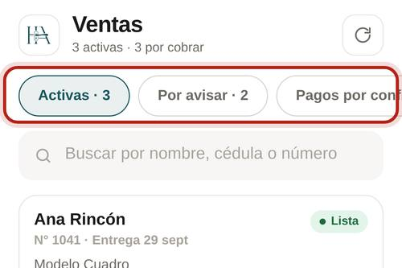
AActivas: sin entregar, la entrega más cercana primero.
PPor avisar: hay algo nuevo que decirle al cliente.
$Pagos por confirmar: esperan que Ray revise el dinero.
CPor cobrar: todavía deben algo.
EEntregadas y Canceladas.
La ficha de un pedido
Toca un pedido para abrirlo. Arriba ves en qué paso va.
1
Los 4 pasos
El punto marca dónde está.
2
Lo que falta
Debajo te dice qué se espera. Recién registrada: "Espera que Ray confirme el pago".
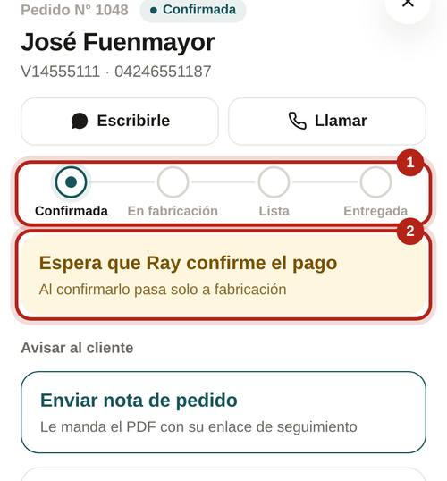
3
En fabricación: cuánto lleva
La barra dice cuántos pasos terminó el taller.
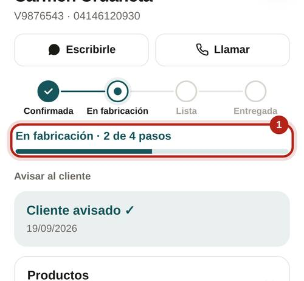
4
En qué paso va cada producto
La etiqueta de cada producto: en ámbar lo están haciendo; con borde, asignado pero sin empezar; en gris espera; en rojo nadie lo tiene; en verde, terminado. "Ver fabricación" abre el detalle.
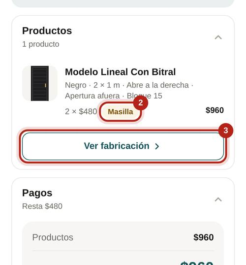
Pagos
Cada pago queda "Por confirmar" hasta que Ray revisa que el dinero llegó.
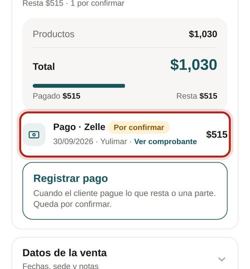
!Por confirmar: Ray todavía no lo revisa.
✓Confirmado: el dinero llegó. Puede traer una nota de Ray.
×No llegó: no cuenta en lo pagado. Hay que hablar con el cliente.
1
Cuando el cliente paga lo que resta: "Registrar pago"
Está en Pagos, solo si todavía debe.
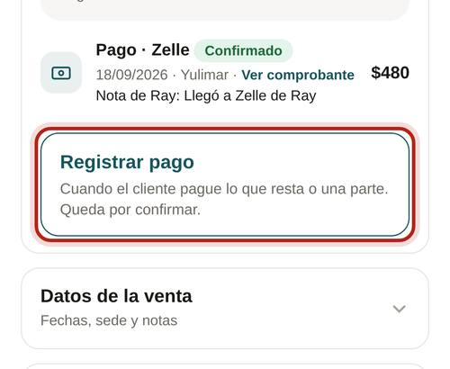
2
Cuánto, cómo y el comprobante
"Paga lo que resta" o "Pago parcial". El comprobante es obligatorio, también en efectivo. Toca "Guardar pago".
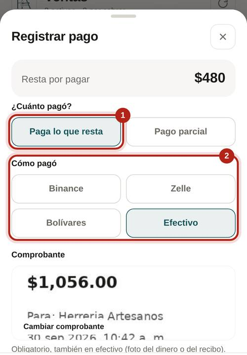
Solo Ray
Confirmar un pago
Solo Ray confirma pagos. Gualfredo ve los pagos pero no los confirma.
1
Toca el aviso o el pendiente
"Nueva venta" o "Nuevo pago" en el celular, o "X pagos por confirmar" en Inicio.
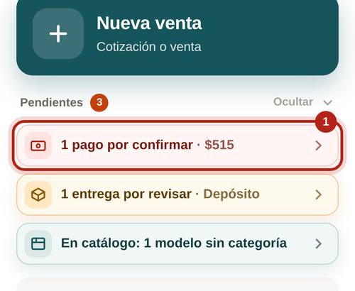
2
Toca el pago "Por confirmar"
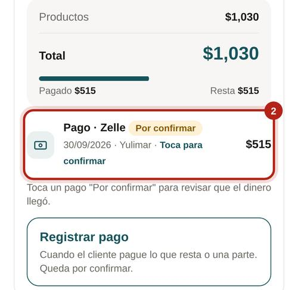
3
Mira el comprobante y revisa tu cuenta
Escribe una nota si hace falta: a dónde llegó, a quién se transfirió.
4
"Sí llegó, confirmar" o "No llegó"
Si llegó y es el primer pago, el pedido pasa solo a fabricación y le llega el aviso al administrador para asignar. Si no llegó, a quien lo registró le llega "Pago no llegó" con tu nota.
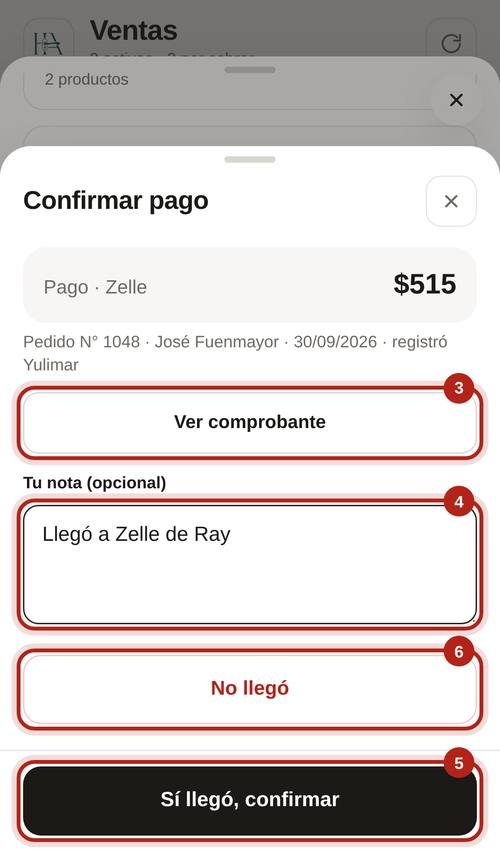
Avisarle al cliente
En la ficha hay un solo botón con lo que toca mandarle ahora.
1Enviar nota de pedido: el PDF con su enlace de seguimiento. Va primero.
2Avisar por WhatsApp: cuando hay algo nuevo (pago confirmado, pedido listo).
✓Cliente avisado: ya está al día. No hay nada que mandar.
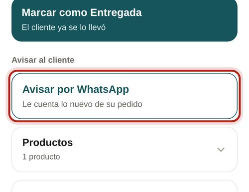
Con el enlace, el cliente ve en su celular en qué paso va su pedido, sus pagos y puede bajar su nota:
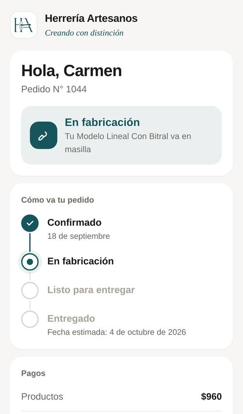
Entregar
1
Cuando el cliente se lo lleva: "Marcar como Entregada"
Sale cuando el pedido está Listo. Cobra lo que resta antes.
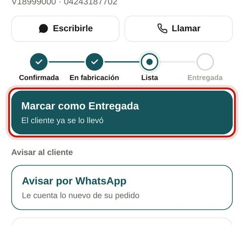
Si todavía debe, la app te pregunta. Un pedido no se entrega debiendo: registra el pago primero.
Más opciones
Al final de la ficha.
✎Editar: solo mientras está Confirmada, antes de ir al taller.
↗Seguimiento y Copiar enlace: lo que ve el cliente.
▤PDF: la nota de pedido.
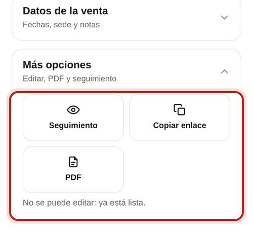
No puedes cancelar una venta. Si el cliente se arrepiente, avísale a un administrador.
Solo administrador
Cancelar una venta
Solo un administrador cancela. No se puede deshacer.
1
Más opciones › "Cancelar venta"
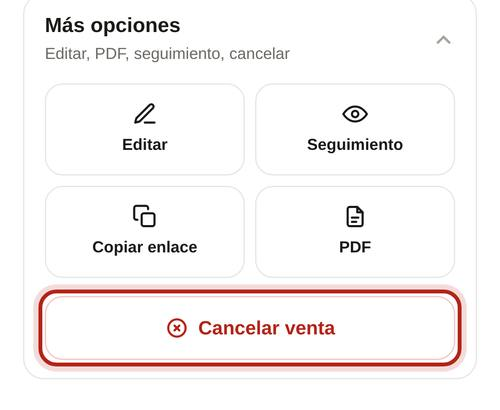
2
Cómo se le devolvió y el motivo
Si pagó, la app registra la devolución de todo lo pagado. Las piezas de entrega inmediata vuelven a la tienda. A los trabajadores que tenían pasos les llega "Pedido cancelado".
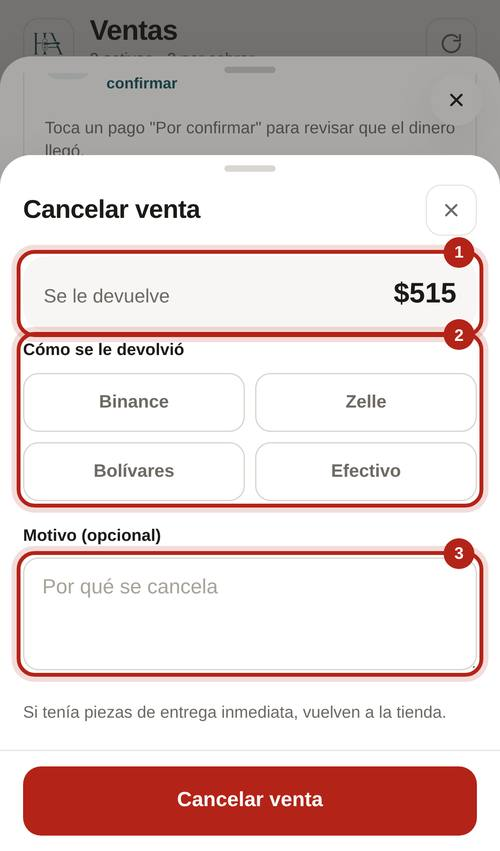
Normas
Siempre
Registra cada pago apenas llegue, con su comprobante.
Cuando el botón diga "Avisar por WhatsApp", mándalo ese mismo día.
Cobra todo lo que resta antes de entregar.
Marca Entregada el mismo día que se la lleva.
Ray: confirma los pagos el mismo día. Sin eso, el pedido no llega al taller.
Nunca
Entregar un pedido que todavía debe.
Cambiarle la fecha de entrega al cliente sin editarla en la venta.
Registrar un pago que todavía no llegó.
Confirmar un pago sin ver que el dinero está en la cuenta.
Avisos
Los que llegan al celular y los que salen en Inicio, en "Pendientes".
Pago confirmado
Te llega si tú registraste el pago. Si era el primero, el pedido pasó a fabricación.
Qué hacer: ábrelo y toca el botón de "Avisar al cliente" (si no le mandaste la nota de pedido, sale primero "Enviar nota de pedido").
Pago no llegó
Trae la nota de Ray.
Qué hacer: habla con el cliente y registra el pago correcto.
Pedido listo
El taller terminó. Solo te llega si tú hiciste la venta.
Qué hacer: avísale que ya puede recogerlo y cobra lo que resta.
En Inicio, "Pendientes":
$Pago no llegó: habla con el cliente.
✓Pedido listo: avísale.
›Pago confirmado: avísale. Mándale el seguimiento.
!Pedido atrasado: pasó su fecha de entrega. Pregunta en el taller y avísale al cliente.
Nueva venta
Primer pago de un pedido. Les llega a los administradores.
Qué hacer: Ray confirma el pago.
Nuevo pago
Otro pago de un pedido. Solo le llega a Ray.
Qué hacer: confirma que llegó.
Venta cancelada
Quién la canceló y cuánto hay que devolver.
Qué hacer: haz la devolución al cliente.
En Inicio, a Ray le sale "X pagos por confirmar" con el total.